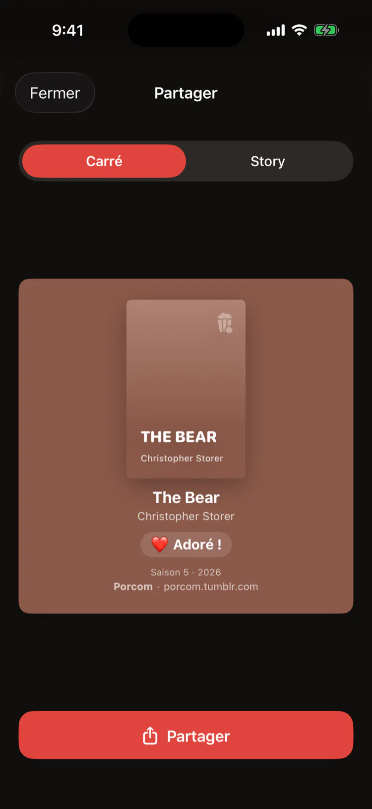
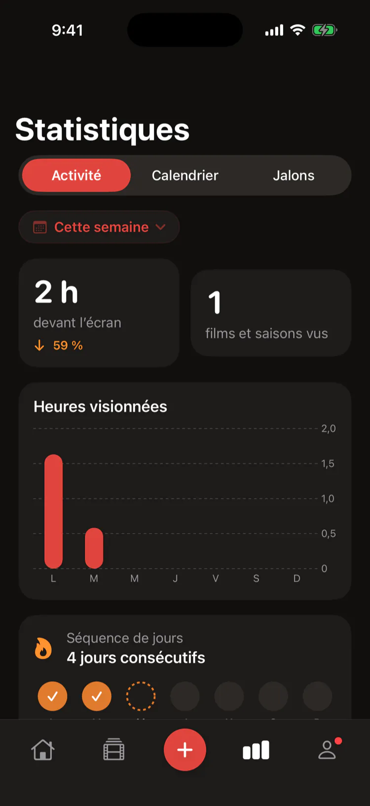
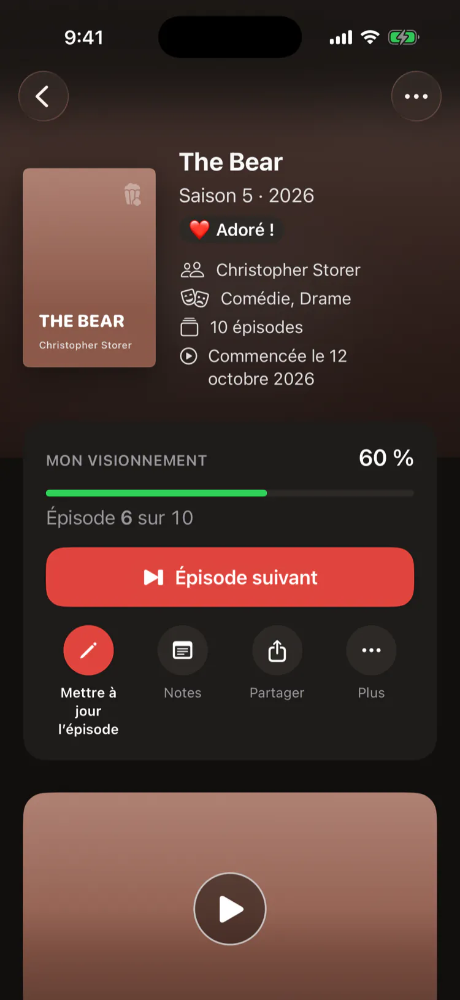
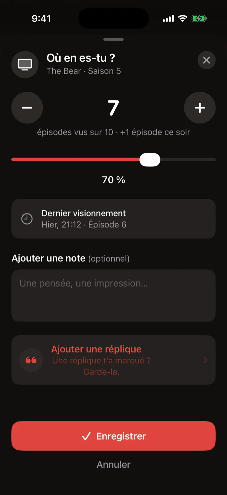
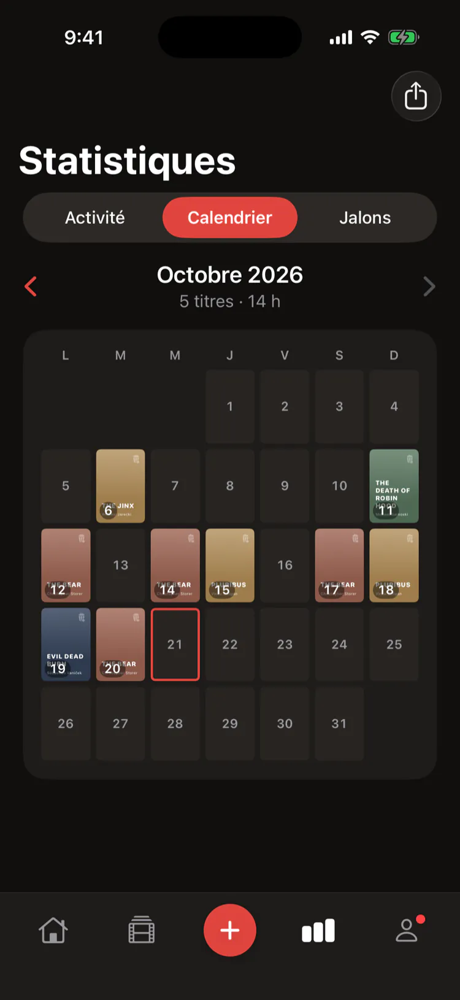
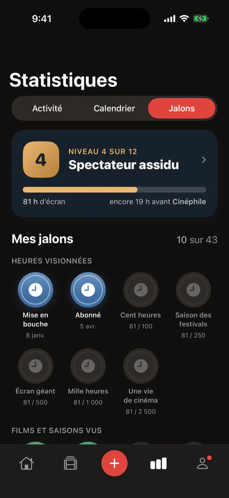

Un petit journal pour tout ce que tu regardes
Bientôt sur l’App Store
Gratuit. Sans compte, sans pub, sans abonnement.







Fonctionnalités
Bandes‑annonces
Chaque titre s’ouvre sur la sienne
Épisodes
Un geste après chaque épisode
Verdicts
Bof, Aimé, Adoré !, Dévoré !
Statistiques
Heures, séquences et objectif annuel
Niveaux
Douze niveaux et un défi par mois
Widgets
Ton prochain épisode à l’écran verrouillé
Synchro iCloud
Ton journal dans ton iCloud privé
Partage
Un titre ou ton année, en image
Letterboxd
Exporte les films que tu as vus
Gratuit
Sans compte, sans pub, sans abonnement
Journal de films et de séries
Bientôt sur l’App Store

Ouvre porcom.app sur ton iPhone avec l’appareil photo
Tes questions, nos réponses
Prix
Porcom est-elle gratuite ?
Oui. Porcom est gratuite, sans publicité, sans abonnement et sans compte.
Compte
Faut-il un compte ?
Non. Porcom fonctionne sans compte ni inscription. Ton journal est enregistré sur ton iPhone et synchronisé avec ton iCloud privé, auquel nous n’avons pas accès.
Ajouter un titre
Comment ajouter un film ou une série ?
Cherche-le par titre : l’affiche, le résumé, la distribution et la bande-annonce viennent de TMDB. Une série s’ajoute une saison à la fois, chacune avec son affiche et son verdict. Tu peux aussi entrer un titre à la main.
Progression
Comment suivre où j’en suis dans une série ?
Touche Continuer après chaque épisode, ou choisis l’épisode où tu es rendu. Chaque mise à jour devient une séance, qui alimente tes statistiques, ton calendrier et ta séquence.
Verdicts
Pourquoi des verdicts plutôt que des étoiles ?
Parce que ce sont ceux du blogue : 👎 Bof, 👍 Aimé, ❤️ Adoré ! et 🔥 Dévoré !. Pour nuancer, tu peux noter de une à cinq étoiles le scénario, les personnages, le jeu, la réalisation, le visuel, la trame sonore et la fin.
Où regarder
Où voir un film ou une série ?
La page de chaque titre montre les plateformes d’abonnement où il est offert au Canada, selon les données de JustWatch fournies par TMDB.
Sauvegardes
Et si je change d’iPhone ?
Ton journal se synchronise avec ton iCloud et revient sur ton nouvel iPhone. Tu peux aussi exporter en tout temps un fichier de sauvegarde Porcom et le restaurer sur un autre iPhone.
Letterboxd
Puis-je exporter vers Letterboxd ?
Oui. Porcom exporte tes films vus dans un fichier CSV au format d’importation de Letterboxd, avec ta date de visionnement, ton verdict et tes notes. Les séries restent dans la sauvegarde Porcom.
Android
Porcom est-elle offerte sur Android ?
Non. Porcom est offerte pour iPhone, en français et en anglais.